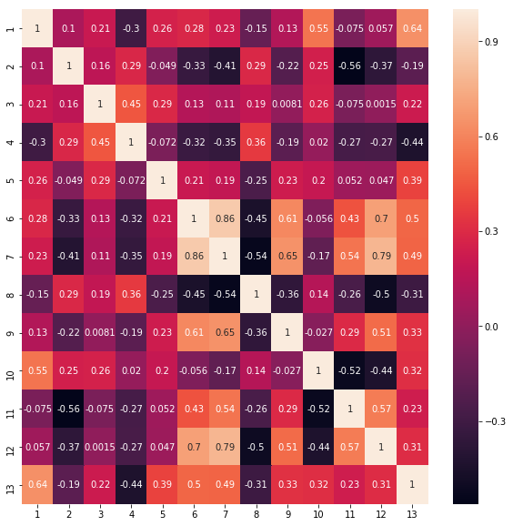

Workshop com
TensorFlow e Keras
|
Luís Eduardo G. França Universidade Federal de Alagoas luiseduardogfranca@gmail.com |
Instalação
para Linux
Pandas: Biblioteca para analíse de dados;
Numpy: Operações matemáticas em arrays e matrizes multidimensionais;
Matplotlib: Biblioteca de plotagem 2D;
Seaborn: Desenho de gráficos estatísticos atraentes;
Intalação...
pip3 install pandas seaborn matplotlib numpy
Implementação
Classificação de vinhos em 3 classes com o TensorFlow e Keras;
Dataset: Wine Data Set
Librarys para manipulação e plotagem:
import pandas as pd
import matplotlib.pyplot as plt
import seaborn as sns
import numpy as np
Seleção de atributos:
#Criação das colunas para tabela
columns = [i-1 for i in range(1,15)]
columns[0] = 'Class'
#Leitura do dataset com pandas
df = pd.read_csv('wine.data.txt')
#Recriação de dataframe com as colunas criadas
df = pd.DataFrame(df.values.tolist(), columns=columns)
#Configuração para o mapa de calor
plt.figure(figsize=(10, 10))
sns.heatmap(df.iloc[:, 1:].corr(), annot=True)
#Lista com atributos de menor correlação
selected_columns = [3, 2, 4, 2, 13, 2, 4, 13, 6, 13, 6, 12]
selected_columns = set(selected_columns)
selected_columns.add('Class')
#Configura o tipo de dados
df = df.astype('float32')
#Função para selecionar um percentil do conjunto de dados
def split_data(data, percent=0.8):
index = int(percent * len(data))
return data[:index], data[index:]
#Separa labels do conjunto de dados
labels = df.iloc[:, 0].values
#Seleciona os atributos não correlacionados
features = df[list(selected_columns)].values
#Recebe o conjunto de dados com a função 'split_data'
X_train, X_test = split_data(features)
Y_train, Y_test = split_data(labels)
Visualização do mapa de correlação
O que é Keras?
É uma API de alto nível para a criação de redes neurais
Pode usar TensorFlow, CNTK ou Theano como backend
Muito usada por pesquisadores devido à facilidade de criação de modelos
Implementação com Keras
Breast Cancer classification with Artifical Neural Network using Keras
from data_process import cleanData
import numpy as np
from keras.models import Sequential
from keras.layers import Dense, Input
from keras.optimizers import SGD
import matplotlib.pyplot as plt
def clean():
global cleanData
cleanData = np.array(cleanData)
# spliting data
X_train = cleanData[:int(0.9 * len(cleanData)), :-1]
Y_train = cleanData[:int(0.9 * len(cleanData)), -1]
temp = []
for i in Y_train:
temp.append([1, 0]) if i == 2 else temp.append([0, 1])
Y_train = np.array(temp)
X_test = cleanData[int(0.9 * len(cleanData)):, :-1]
Y_test = cleanData[int(0.9 * len(cleanData)):, -1]
temp = []
for i in Y_test:
temp.append([1, 0]) if i == 2 else temp.append([0, 1])
Y_test = np.array(temp)
return X_train, Y_train, X_test, Y_test
def train(X_train, Y_train, X_test, Y_test):
model = Sequential()
model.add(Dense(units=50, activation='relu', input_dim=4))
model.add(Dense(units=2, activation='softmax'))
sgd = SGD(lr=0.001, decay=0.00001)
model.compile(loss='categorical_crossentropy',
optimizer=sgd,
metrics=['accuracy'])
history = model.fit(X_train, Y_train, epochs=500,
validation_data=(X_test, Y_test))
# summarize history for accuracy
plt.plot(history.history['acc'])
plt.plot(history.history['val_acc'])
plt.title('model accuracy')
plt.ylabel('accuracy')
plt.xlabel('epoch')
plt.legend(['train', 'test'], loc='best')
plt.show()
# summarize history for loss
plt.plot(history.history['loss'])
plt.plot(history.history['val_loss'])
plt.title('model loss')
plt.ylabel('loss')
plt.xlabel('epoch')
plt.legend(['train', 'test'], loc='best')
plt.show()
if __name__ == '__main__':
X_train, Y_train, X_test, Y_test = clean()
train(X_train, Y_train, X_test, Y_test)
O que é TensorFlow?
Biblioteca open source para computação númerica (não somente para machine learning);
Permite criar modelos preditivos de forma mais eficiente e que requisite menos processamento para a aplicação;
Desenvolvida em C++, porém com disponibilidade de comunicação em Python por meio da API TensorFlow;
TensorFlow vai dispor de várias outras aplicações, como: API TensorFlow, TensorBoard e TensorServing;
Algumas empresas utilizam o TensorFlow: Google, OpenAI, DeepMind, Snapchat, Airbus, Uber, Dropbox e etc.
Conceitos
TensorFlow usa de grafos para representar o fluxo de dados(tensores) e as suas operações;
Tensor: Um array n-dimensional;
Nós: Onde ocorre as operações entre os tensores;
Session: é o objeto que encapsula o ambiente onde as operações são executadas e as variáveis inicializadas;
Instalação
Execute os seguintes comandos no terminal:
sudo apt install python3-pip
pip3 install virtualenv
virtualenv -p python3 TensorKeras
source TensorKeras/bin/activate
pip3 install tensorflow=1.5 keras
Implementação com TensorFlow
from data_process import cleanData
import numpy as np
import tensorflow as tf
cleanData = np.array(cleanData)
# spliting data
X_train = cleanData[:int(0.9 * len(cleanData)), :-1]
Y_train = cleanData[:int(0.9 * len(cleanData)), -1]
temp = []
for i in Y_train:
temp.append([1,0]) if i == 2 else temp.append([0,1])
Y_train = np.array(temp)
X_test = cleanData[int(0.9 * len(cleanData)):, :-1]
Y_test = cleanData[int(0.9 * len(cleanData)):, -1]
temp = []
for i in Y_test:
temp.append([1,0]) if i == 2 else temp.append([0,1])
Y_test = np.array(temp)
X = tf.placeholder(tf.float32, [None, 4], name="Input")
W1 = tf.Variable(tf.truncated_normal([4, 50], stddev=0.1), name="W1")
b1 = tf.Variable(tf.zeros([50]), name="B1")
W2 = tf.Variable(tf.truncated_normal([50, 2], stddev=0.1), name="W2")
b2 = tf.Variable(tf.zeros([2]), name="B2")
with tf.name_scope("First_Layer") as scope:
l1 = tf.nn.leaky_relu(tf.matmul(X, W1) + b1)
tf.summary.histogram("weights1", W1)
tf.summary.histogram("biases1", b1)
with tf.name_scope("Second_Layer") as scope:
l2 = tf.matmul(l1, W2) + b2
tf.summary.histogram("weights2", W2)
tf.summary.histogram("biases2", b2)
with tf.name_scope("Output") as scope:
Y = tf.nn.softmax(l2)
Y_ = tf.placeholder(tf.float32, [None, 2], name="labels")
# cross_entropy = tf.nn.softmax_cross_entropy_with_logits(logits=l2,
# labels=Y_)
# cross_entropy = tf.reduce_mean(cross_entropy)*613
cross_entropy = -tf.reduce_sum(Y_*tf.log(Y))
is_correct = tf.equal(tf.argmax(Y, 1), tf.argmax(Y_, 1))
accuracy = tf.reduce_mean(tf.cast(is_correct, tf.float32))
tf.summary.scalar("cost_train", cross_entropy)
tf.summary.scalar("acc_train", accuracy)
learning_rate = 0.00003
optimizer = tf.train.GradientDescentOptimizer(learning_rate).minimize(cross_entropy)
merged_summary_op = tf.summary.merge_all()
with tf.Session() as sess:
sess.run(tf.global_variables_initializer())
writer = tf.summary.FileWriter('./log', graph=sess.graph)
#500 epochs
for i in range(500):
acc, ce = sess.run([accuracy, cross_entropy], feed_dict={X: X_train,
Y_: Y_train})
if i%10 == 0:
print("Accuracy train:", acc, "Train loss", ce)
acc, ce = sess.run([accuracy, cross_entropy], feed_dict={X: X_test,
Y_: Y_test})
if i%10 == 0:
print("Accuracy test:", acc, "Test loss", ce)
_, summary = sess.run([optimizer, merged_summary_op], feed_dict={X: X_train, Y_: Y_train})
writer.add_summary(summary, i * 613 + i)